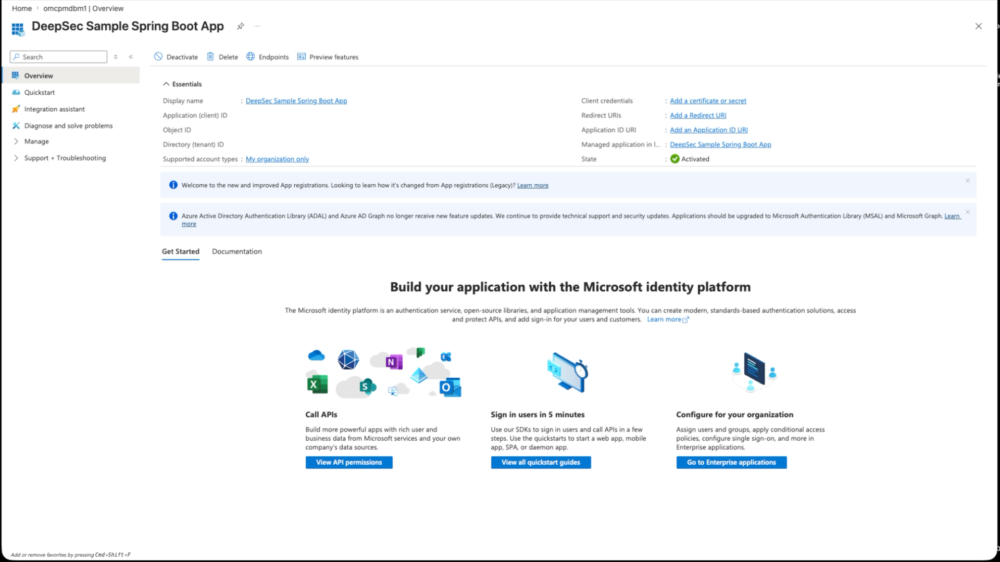
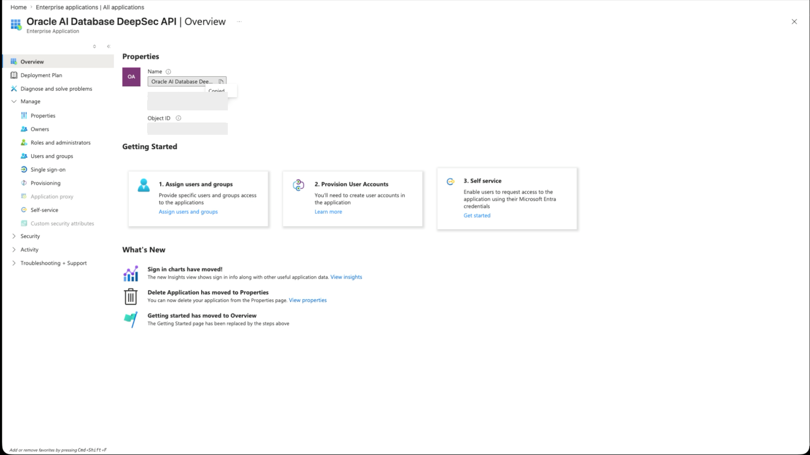
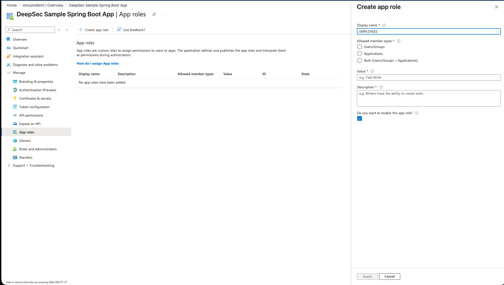
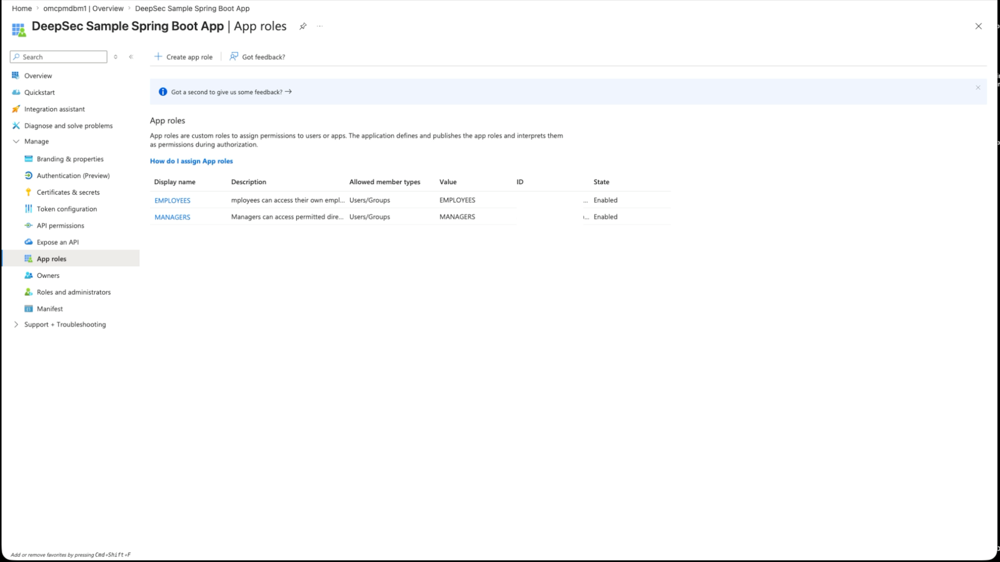
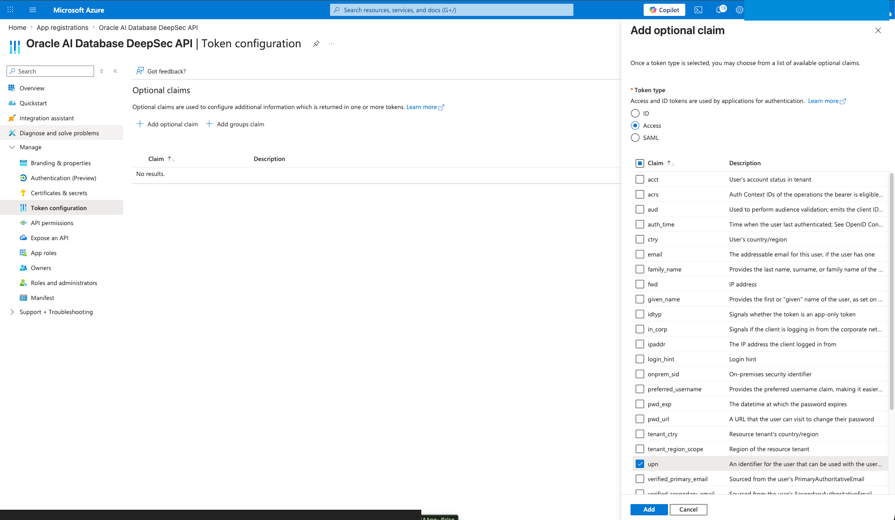
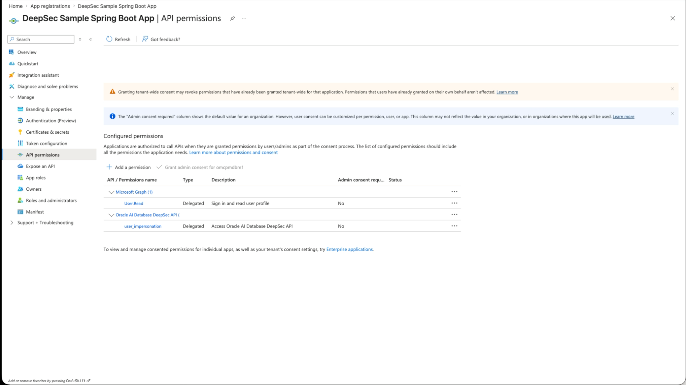
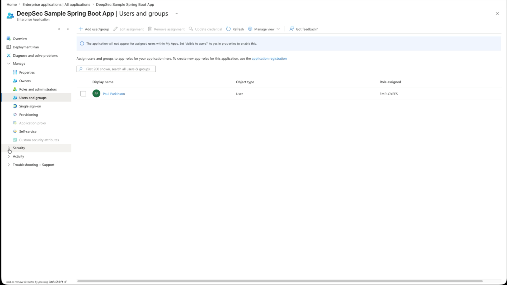

Develop Database-Enforced End-User Auth with Oracle AI Database Deep Data Security and Java
A practical Spring Boot walkthrough for propagating Microsoft Entra identity through a pooled JDBC connection, then letting Oracle AI Database enforce row, column, and cell-level access rules.
Most enterprise Java services use a connection pool. That is good engineering: fast, stable, observable, and easy to operate. It also means every request may reach the database through the same application database account.
That is where authorization gets tricky. If Emma and Marvin both use the same pooled database user, the database cannot naturally tell which rows belong to Emma, which columns Marvin may see, or which values a manager may update unless the application pushes that logic down with every query. The other option is to create and select a separate datasource or connection pool for each user, which is not feasible for numerous operational reasons.
Why This Matters
Oracle Deep Data Security changes that shape. The application still uses a pooled database connection, but it attaches an end-user security context to the JDBC connection before executing SQL. Oracle AI Database then evaluates declarative data grants at execution time.
This is especially important for agentic applications. Agents, copilots, and natural-language SQL tools can fan out into many possible data paths. If every path depends on application-side filters, one missed branch can become a security bug. With Deep Data Security, the database remains the final policy enforcement point for fine-grained row, column, and cell-level access.
The important idea: the Spring Boot app does not rewrite SQL or implement authorization logic. It propagates identity and tokens to Oracle AI Database, which enforces authorization policies.
This blog is intended to be a complete walkthrough, so I include the Entra setup explicitly instead of only linking to the Microsoft documentation. That part is easy to get subtly wrong, and writing it down forced me to understand it better too.
A good starting point, and the one I extended to create this Java app, is Richard C. Evans's excellent LiveLabs FastLab: Identity-Aware Database Access with Microsoft Entra ID and Oracle Deep Data Security. While I am giving credit due, I will mention that Michael McMahon is the fantastic and friendly developer who wrote the Java support for this Deep Data Security feature.
What We Are Building
The demo is a Spring Boot application that authenticates a browser user with Microsoft Entra ID, requests a database-access token using the OAuth 2.0 on-behalf-of flow, attaches both tokens to an Oracle JDBC connection with EndUserSecurityContext, and runs a normal SQL query against an HR table.
The JDBC pieces come from the Oracle Database 26ai JDBC Driver & UCP downloads. The project uses the 23.26.2.0.0 Maven artifacts for ojdbc11, ucp, and the wallet support jars.
In the database, Microsoft Entra app roles map to Oracle Deep Data Security data roles:
CREATE OR REPLACE DATA ROLE hrapp_employees
MAPPED TO 'AZURE_ROLE=EMPLOYEES';
CREATE OR REPLACE DATA ROLE hrapp_managers
MAPPED TO 'AZURE_ROLE=MANAGERS';
If the signed-in user has the Entra app role EMPLOYEES, Oracle activates HRAPP_EMPLOYEES. If that same user later has the Entra app role MANAGERS, or a different signed-in user has MANAGERS, Oracle activates the manager data role. Users can also have multiple app roles. The application code and SQL query do not change.
There are two easy ways to demonstrate that. You can sign in as two different Entra users with different app-role assignments, or you can keep one real demo user, change that user's database/API Enterprise Application role assignment, get a fresh token, and map that same Entra username to different sample HR rows. In the video I use my Paul Parkinson Entra user for that one-user path; Emma, Marvin, Charlie, and Dana are sample database rows, not Entra users. In both cases, the user identity and role claims travel together in the security context, and the same endpoint and SQL return different data because Oracle sees different end-user identity and role claims.
The Runtime Flow
- The browser opens
GET /deepsec/query. - Spring Security redirects the browser to Microsoft Entra ID.
- The user signs in.
- Spring Security receives an authorization code and exchanges it for the user's Entra access token.
- The backend exchanges that user token for a separate database-access token using OAuth 2.0 on-behalf-of.
- The app creates an Oracle JDBC
EndUserSecurityContextwith both tokens. - Oracle AI Database validates the context, activates mapped data roles from the Entra
rolesclaim, and enforces data grants while SQL runs. - The app clears the context before returning the connection to the pool.
This is the key separation: the user token proves who the browser user is, while the database-access token is addressed to the Oracle database resource. Both matter.
I run the same endpoint twice to make the behavior obvious. First, the signed-in Entra user has the EMPLOYEES app role, and one sample employee row is mapped to that user's ORA_END_USER_CONTEXT.username. The app executes the same business SQL and Oracle returns only that employee row:
{"rows":["3:Emma Baker"]}
Then I either sign in as a separate manager Entra user or, for the video, change the same Paul Parkinson Entra user's database/API enterprise-application assignment so the fresh token carries MANAGERS instead of, or in addition to, EMPLOYEES. For the one-user demo, I map that same real Entra username to the sample manager row so the manager end-user context resolves to the manager employee ID.
The request is still GET /deepsec/query. The SQL is still the same default query. The connection pool is still the same application pool. The result set changes because Oracle activates HRAPP_MANAGERS from the token role claim and applies the manager data grant, which returns only rows in that manager user's permitted scope, with restricted columns still protected by the database.
{"rows":["3:Emma Baker","4:Charlie Davis","5:Dana Lee"]}Create an Oracle AI Database if You Don't Have One
You need an Oracle AI Database with Deep Data Security support. Any 23.26.2 or later database is fine for this walkthrough, including Autonomous Database, Oracle Database Free in a container, or another local or cloud database you can reach from the Spring Boot app.
The Java side uses the 23.26.2.0.0 JDBC/UCP artifacts, so keep the database and driver versions aligned at that level or later before you start troubleshooting identity behavior.
The Entra ID Setup in the Azure Portal
All of the identity setup below happens in the Azure Portal under Microsoft Entra ID. You will move between App registrations and Enterprise applications. App registrations define APIs, scopes, app roles, redirects, and secrets. Enterprise applications are where those app roles are assigned to users or groups.
Use two Entra app registrations:
- Spring Boot app registration: represents the Java web application and OAuth client.
- Database/API app registration: represents Oracle AI Database as the protected resource.
Spring Boot app registration
Create a separate app registration for the Spring Boot application. Add a Web redirect URI:

DEEPSEC_ENTRA_CLIENT_ID and DEEPSEC_ENTRA_TENANT_ID. Use the client secret value, not the secret ID.http://localhost:8080/login/oauth2/code/entraExpose an API for the Spring Boot app too, using:
api://<SPRING_BOOT_APP_CLIENT_ID>
Add a delegated user_impersonation scope. This scope is requested during browser login so the resulting token has the Spring Boot app as its audience. That is required for the on-behalf-of exchange.
Database/API app registration
Create an app registration named something like Oracle AI Database DeepSec API. Set its Application ID URI to the default form:
api://<DB_APP_CLIENT_ID>
That default api://... URI is the Autonomous Database path I use in this walkthrough. If you are targeting Oracle Database Free or another non-ADB database, use a domain-qualified https://... Application ID URI instead and keep the later database configuration, scope, and tnsnames.ora values aligned.
Add a delegated scope named user_impersonation. Add app roles named EMPLOYEES and MANAGERS. These are the role values Oracle later sees in the database-access token and maps to DDS data roles.


EMPLOYEES and MANAGERS with Users/Groups as the allowed member type. The database/API registration uses this same blade.
roles claim. For the database/API app registration, the database SQL maps those exact values to DDS data roles.
In the database/API app manifest, set requestedAccessTokenVersion to 2. In older Azure AD Graph and portal references this is often called accessTokenAcceptedVersion. It tells Microsoft Entra which access-token format the resource app supports. For this demo, the database-access token should decode with ver=2.0 and an aud value matching the database/API app client ID.
"requestedAccessTokenVersion": 2
I also added the upn optional claim for access tokens so the end-user context has a stable username value to compare against the sample hr.employees.user_name column.

Connect the two registrations

user_impersonation permission so it can perform the on-behalf-of exchange.
In the Spring Boot app registration, open API permissions, add a permission from My APIs, choose the database/API registration, and grant its delegated user_impersonation scope.
Then go to Enterprise applications, open the database/API enterprise application, and assign users or groups to EMPLOYEES or MANAGERS. For database enforcement, the important assignment is on the database/API enterprise application, because that is the resource for the database-access token Oracle validates.

Users and groups blade is where a real user or group is assigned to EMPLOYEES or MANAGERS.The resulting application configuration looks like this:
DEEPSEC_ENTRA_TENANT_ID="your-tenant-id"
DEEPSEC_ENTRA_CLIENT_ID="<SPRING_BOOT_APP_CLIENT_ID>"
DEEPSEC_ENTRA_CLIENT_SECRET="spring-boot-app-client-secret"
DEEPSEC_ENTRA_DATABASE_SCOPE="api://<DB_APP_CLIENT_ID>/user_impersonation"
DEEPSEC_ENTRA_APPLICATION_SCOPE="openid,profile,email,api://<SPRING_BOOT_APP_CLIENT_ID>/user_impersonation"Configuring Oracle AI Database
Oracle AI Database needs to trust the Entra tenant and the database/API app registration before it can validate the database-access token. The repo includes two database-admin setup scripts, depending on where you run the database:
sql-entraid/01_enable_adb_entra_external_authentication.sqlusesDBMS_CLOUD_ADMIN.ENABLE_EXTERNAL_AUTHENTICATIONfor Autonomous Database.sql-entraid/01_enable_database_free_entra_external_authentication.sqlusesIDENTITY_PROVIDER_TYPEandIDENTITY_PROVIDER_CONFIGfor Oracle Database Free or another non-ADB install.
-- Autonomous Database, run once as ADMIN after editing DEFINE values:
@security/deepdatasecurity-api-version/sql-entraid/01_enable_adb_entra_external_authentication.sql
-- Oracle Database Free container, run once as SYSDBA or equivalent:
@security/deepdatasecurity-api-version/sql-entraid/01_enable_database_free_entra_external_authentication.sql
One detail to watch: for Oracle Database Free and other non-ADB databases, IDENTITY_PROVIDER_CONFIG.application_id_uri is documented as a domain-qualified https://... URI. If you use that path, make the database/API app registration's Application ID URI, DEEPSEC_ENTRA_DATABASE_SCOPE, and the tnsnames.ora azure_db_app_id_uri value match that same URI.
Verify the database picked up the identity provider:
SELECT name, value
FROM v$parameter
WHERE name IN ('identity_provider_type', 'identity_provider_config');The application connection-pool user only needs the ability to connect and attach an end-user security context:
GRANT CREATE SESSION TO hr_app_user;
GRANT CREATE END USER SECURITY CONTEXT TO hr_app_user;JDBC Thin and tnsnames.ora
The wallet's tnsnames.ora entry can carry Entra-specific connection metadata. The key additions are token_auth=azure_interactive and azure_db_app_id_uri=api://<DB_APP_CLIENT_ID> inside the security block. A mydb_high alias would look like this:
mydb_high =
(description=
(retry_count=20)(retry_delay=3)
(address=(protocol=tcps)(port=1522)(host=adb.us-ashburn-1.oraclecloud.com))
(connect_data=(service_name=asdf_mydb_high.adb.oraclecloud.com))
(security=
(ssl_server_dn_match=yes)
(token_auth=azure_interactive)
(azure_db_app_id_uri=api://4ad8a6b8-asdf-asdf-asdf-5d14bcc22c8a)))
Use your own service name and database/API app ID URI, of course. token_auth=azure_interactive is useful for direct JDBC Thin testing because the driver can open the browser-based Entra sign-in flow. azure_db_app_id_uri tells the driver which Entra resource represents the database. The Spring Boot demo itself uses a normal pooled application database user and attaches the Deep Data Security context programmatically, so I keep a separate application alias without token_auth=azure_interactive for the UCP pool.
The Data Grants
The policy itself lives in SQL. For an employee, the row predicate says a user can see rows where the table username matches ORA_END_USER_CONTEXT.username:
CREATE OR REPLACE DATA GRANT hr.HRAPP_EMPLOYEES_ACCESS
AS SELECT, UPDATE(phone_number, first_name)
ON hr.employees
WHERE upper(user_name) = upper(ORA_END_USER_CONTEXT.username)
TO hrapp_employees;
For managers, the policy permits access to direct reports while excluding sensitive columns such as ssn:
CREATE OR REPLACE DATA GRANT hr.HRAPP_MANAGER_ACCESS
AS SELECT (ALL COLUMNS EXCEPT ssn),
UPDATE (salary, department_id, first_name)
ON hr.employees
WHERE manager_id = ORA_END_USER_CONTEXT.HR.EMP_CTX.ID
TO hrapp_managers;Notice what is not happening here: the Java service/AI agent is not building custom SQL for employees and managers. The app can issue the same business query, and Oracle filters or restricts the result according to the active end-user security context.
The Spring Boot Code
The service first receives the browser user's Entra token from Spring Security. Then it requests a database-access token with the OAuth 2.0 on-behalf-of flow:
MultiValueMap<String, String> form = new LinkedMultiValueMap<>();
form.add("grant_type", "urn:ietf:params:oauth:grant-type:jwt-bearer");
form.add("client_id", entraId.getClientId());
form.add("client_secret", entraId.getClientSecret());
form.add("scope", entraId.getDatabaseScope());
form.add("assertion", endUserToken);
form.add("requested_token_use", "on_behalf_of");Then the app attaches the Deep Data Security context to the Oracle JDBC connection:
The method names are on oracle.jdbc.OracleConnection. The important calls are setEndUserSecurityContext(...) before SQL and clearEndUserSecurityContext() before returning the connection to the pool.
OracleConnection oracleConnection =
connection instanceof OracleConnection
? (OracleConnection) connection
: connection.unwrap(OracleConnection.class);
EndUserSecurityContext context =
EndUserSecurityContext.createWithToken(databaseAccessToken, endUserToken);
oracleConnection.setEndUserSecurityContext(context);
try {
return runQuery(connection, sql);
}
finally {
oracleConnection.clearEndUserSecurityContext();
}
The finally block is not cosmetic. In a pooled application, clearing the context before returning a connection to the pool is mandatory hygiene.
Running the Demo
The app reads a local .env file. The important defaults are intentionally boring:
DEEPSEC_SQL="select employee_id || ':' || first_name || ' ' || last_name from hr.employees fetch first 10 rows only"
There is no app-side data-role switch in this flow. Oracle AI Database reads the Entra roles claim and activates the mapped DDS roles automatically.
Start the app:
cd security/deepdatasecurity-api-version
cp .env_example .env
vi .env
./build.sh
./run.shThen open:
http://localhost:8080/deepsec/query
With the user assigned to EMPLOYEES, the query result should be limited to that user's employee row:
{"rows":["3:Emma Baker"]}The Nice Part: Changing Roles Without Changing Code
To demo manager behavior with one browser user, assign that same real Entra user to the MANAGERS app role in the database/API enterprise application, get a fresh token, and map that user's username to a sample manager row. In a real multi-user demo, you can instead sign in as a different Entra user who already has the MANAGERS app role and a matching manager row.
Now the Entra token contains a different role set. Oracle AI Database sees that during context creation, activates the matching DDS data role, and enforces the manager policy. The endpoint, Java code, connection pool, and SQL statement stay the same.
In the sample HR data used in the walkthrough, the manager row has direct reports Emma, Charlie, and Dana. So the same /deepsec/query call moves from a single employee row to the manager's direct-report set:
{"rows":["3:Emma Baker","4:Charlie Davis","5:Dana Lee"]}Helpful Tips
/deepsec/whoami is a setup/debug aid, not part of the authorization flow. It shows the exact username value Oracle sees in the end-user context. If your sample rows do not already match that value, use it to update one employee row for a quick demo:
http://localhost:8080/deepsec/whoamiUPDATE hr.employees
SET user_name = '<value returned by /deepsec/whoami>'
WHERE employee_id = 101;
COMMIT;- Empty rows can be success. If
/deepsec/queryreturns{"rows":[]}with no exception, the DDS policy probably filtered everything. Make surehr.employees.user_namematches the end-user context username. - Use schema-qualified table names. With an active end-user context, unqualified
employeescan resolve unexpectedly. Usehr.employees. - Make the database/API token v2. If Oracle reports an invalid database-access token, decode it and check
ver=2.0and anaudvalue matching the database/API app ID. - Restart and use a fresh browser session after scope changes. The app reads
.envat startup, and browsers cache login sessions aggressively.
What To Productionize
- Store the Entra client secret in a secret manager, not in a local file.
- Validate expected issuer, audience, scopes, tenant, and role claims explicitly.
- Manage data roles and data grants with versioned database migrations.
- Add integration tests that run the same query as employee and manager identities.
- Audit end-user contexts and data grant behavior in database monitoring.
Next: Use Oracle JDBC Spring Provider, Deep Data Security with Zero Code Changes
I will extend this demo to use Oracle's ojdbc-provider-spring provider next. That provider lets Oracle JDBC read the current Spring Security context and propagate the end-user security context through the JDBC provider SPI, so the same Deep Data Security pattern can be enabled with configuration instead of explicit OracleConnection.setEndUserSecurityContext(...) calls in application code.
The relevant Oracle guide for that next step is Set Up the Spring Boot Application.
References
- Demo source code
- Oracle Database JDBC driver and UCP downloads
- OracleConnection API reference, 26ai
- Oracle Deep Data Security announcement
- Richard C. Evans, LiveLabs FastLab: Identity-Aware Database Access with Microsoft Entra ID and Oracle Deep Data Security
- Oracle Deep Data Security concepts
- Configure Deep Data Security data grants
- SQL Reference: CREATE DATA GRANT
- Microsoft Entra ID with Oracle AI Database
- Microsoft Entra app manifest reference
- Microsoft identity platform access tokens